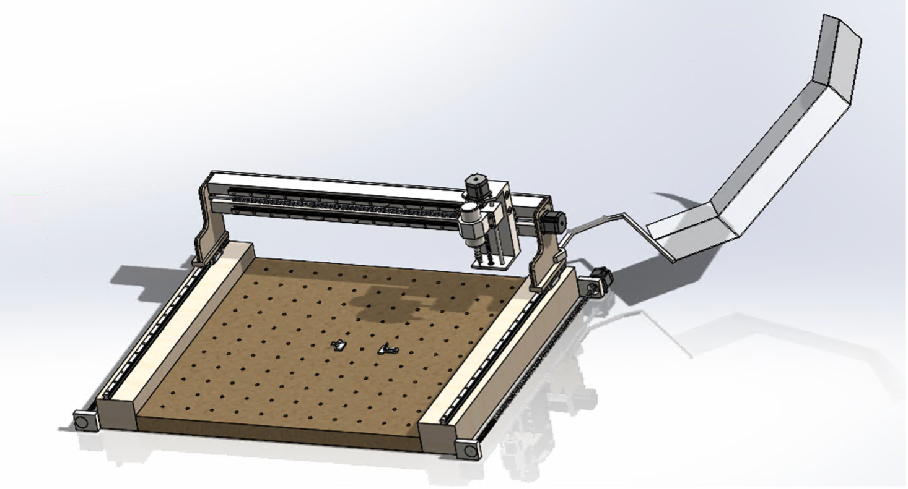

This project tasked a group of four, including myself, with designing a CNC router tailored for hobbyist use, with considerations of compactness, durability, and beginner accessibility. The goal was to create a cost-effective and precise machine capable of handling materials such as wood, acrylic, and soft metals. The project emphasized careful component selection, safety, and adherence to design specifications.
The project involved extensive research into the features and requirements hobbyists would prioritize, as well as relevant dimensions and mechanical mechanisms. Based on this research, the team collaboratively defined the CNC router’s functions, objectives, and design constraints. Objectives included ease of assembly, the ability to upgrade or replace parts, and long-lasting performance, while constraints focused on safety, size, and budget considerations.
From these specifications, three distinct design concepts were developed, varying in cost, size, and component selection (two of which are shown below).
Through iterative evaluation, the team identified the optimal solution that best aligned with project objectives. This led to the final design:
The final design resulted in a compact and versatile CNC router tailored for home hobbyists. With a footprint of 3×3 ft, it is easy to store while still accommodating materials up to 3×6 ft. The router features a 3-axis motion system for precise cutting and shaping of soft-to-medium hardness materials, including wood, plastic, foam, and aluminum. Key elements include a robust aluminum and steel frame for structural integrity, an MDF cutting surface to reduce costs, and removable polycarbonate safety guards to maintain protection without compromising usability. The gantry’s lightweight yet rigid construction, guided by Z-axis rails, ensures stability, while NEMA 23 stepper motors, including dual motors for the X-axis, provide accurate and synchronized motion. Supplementary attachments, such as cutting and sanding tools, further enhance functionality. This design was selected over other candidates for its balance of cost-effectiveness, simplicity, ease of assembly, and practicality for hobbyist users, demonstrating a successful integration of performance, durability, and user-focused features.
This project deepened my interest in mechanical design and reinforced my aspiration to pursue this field. To build the necessary skills, I have earned the SolidWorks CAD Design Associate certificate and the SolidWorks CAD Design Professional certificate.